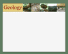
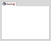

Special Project: Geology Website
Finished May 2008
Conceptual work and planning
{kind=link}

During the spring semester of 2008 I volunteered to design, code and create the Northern Kentucky University Geology website. The special project is under the supervision of Sarah Johnson. The project is expected to be completed prior to the end of the current semester. The development tools used by myself include primarily Microsoft Visual Studio 2008 Web Developer Express and Adobe Photoshop CS3. The resulting code is XHTML 1.0 compliant and follows CSS 2.1 standards.
{kind=link}

Many ideas were put forth pertaining to the new website and quite a few early designs were created. Over time decisions were made, liberties were taken and a more final picture of the eventual site emerged. The media used on the site is almost entirely photographs taken from albums created by staff and students of the Geology department. The image of the earth used is the infamous "blue marble" picture taken by Apollo 17. The image behind the navigation is a an aerial photograph of the Southern Alps in New Zealand taken from Google Earth.
Completion of design aspect
Halfway through the semester, a final design was chosen and polished. Now comes the task of gathering up-to-date information to put on it (courses, faculty, schedules) and displaying it adequately and in a way that makes it easily accessible to both current students and prospective students.
{kind=link}
To get a view of what the bottom part of the layout looks like, click here. The layout is considered complete, but as information accumulates small changes might be made. I will update this page with the final version of the site when it is completed, most likely at the end of this semester in May 2008.
{kind=link}
The final product
To view the final project visit the website which went live on April 25, 2008: Geology Department. Update: The site is no longer in use as all departments have transitioned to a university-wide template for consistency.